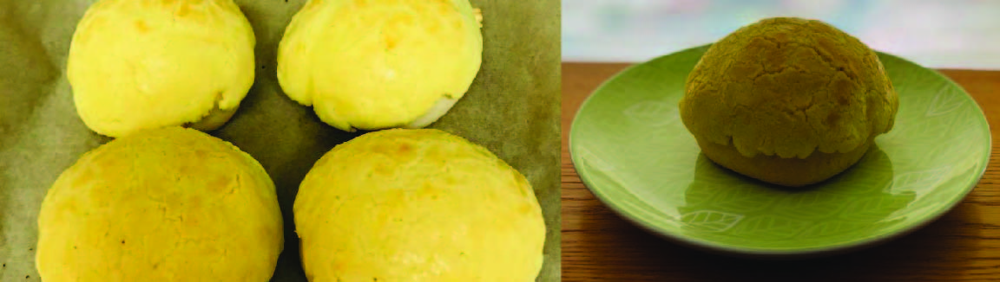

Pineapple Buns
Whenever I didn’t succeed in convincing my dad not to send me to Little Genius, I forced him to buy me bubble tea and pineapple buns from the food court next to the after-school program. My mom was a bit harder to convince. She rarely came to pick me up early from Little Genius even if I called her on the phone and told her that I wanted to go home. Since it was worth the risk, I always asked if we could buy more snacks from the food court before leaving. Sometimes, she said yes, and I got treats before and after experiencing hell. Those Little Genius days weren’t too bad.
This recipe is matched with Chapter 2 of “The Asian Fail”, which describes what sort of student I was in elementary school and how I transformed into the perfectionist that I am today. Pineapple buns are one of the sweets that I reference in that chapter. I forced my dad to buy them for me whenever he drove me to Little Genius, an after-school program that I really detested as a kid. I am including a recipe of pineapple buns to represent that little girl within me who doesn’t like to study and just wants to eat sweets.
Pineapple buns are classic Asian pastries. The bun is soft and slightly sweet, similar to a bread roll. A crispy and buttery sugar crust lies on the top of the bun with cracks on the surface, which gives the pastry a pineapple pattern. When I was young, I used to think that pineapple buns actually contained pineapple flavoring, but sadly they don’t. I must have imagined the buns to have a subtle pineapple taste that only my delicate taste buds could detect. It wasn’t until I started researching pineapple bun recipes a month ago that I realized the missing pineapple. The past me would have been quite disappointed!
Pineapple buns are actually pretty complicated to make from scratch, which is kinda ironic since that’s the sweet that represents my carefree, homework avoider, self. They are easy to eat, but difficult to make, which fits with the times I delegated my work to other people when I was in elementary school. I only made pineapple buns once, so I don’t think I’m qualified to write my own recipe. I followed Healthy Nibbles’ recipe, which I highly recommend. The instructions are quite detailed, and the pineapple buns turned out really well. Another recipe I found is from Omnivore’s Cookbook. Instead of paraphrasing their recipes, I decided to just include a tips and tricks section.
Tips and Tricks
- Disclaimer: I’m not a bread expert. In fact, I might be gluten sensitive, so I don’t eat much bread in general, which is so sad because I love bread. Even so, I enjoy reading about how to bake bread, so hopefully the sources I put here will be helpful for you!
- Tangzhong is a bread-making technique that produces soft yeast breads. It involves briefly heating up a bit of flour and liquid, constantly mixing until a thick slurry is formed, and then combining it with the other bread ingredients. Tangzhong works by pre-gelatinizing the starches in the flour, so they could absorb and hold on to more water. This results in a less sticky dough, a higher rise, and a softer texture. It’s super important for Asian buns, so definitely pay attention to those steps!
- If you don’t have one of those fancy stand mixers, you can knead the dough by hand. Kneading allows the gluten protein molecules to coagulate and form the bread’s underlying structure. If the recipe says to mix for 10 minutes, then knead for the same amount of time. Here is a good source that explains how to knead dough by hand. The key things to remember are to add the flour in stages and to implement the window pane test
- Temperature matters when it comes to rising bread dough. The optimal temperature to grow yeast is between 75-78°F, which might not correspond to the temperature in your kitchen, especially when it’s winter or the AC is on. There are several ways you can store dough while it rises to hit that temperature sweet spot. You could buy an electric dough proofer or a dough-rising bucket. If you don’t want to buy anything fancy, you can put it in a container with a snap-on lid. Don’t drape a towel over the dough since it will allow moisture to escape, which may negatively impact the rise. There are a few other options that are described here
- One of the things I struggle with the most is deciding when the dough has risen enough. There is supposedly a simple test that can help you tell whether you underproofed or overproofed your dough. Basically, you give the dough a good poke and see how it reacts. If the dough immediately springs back, then it is underproofed and needs some more time to rise. (Yeast is still producing lots of air bubbles, so it isn’t at the sleepy rate that is ideal for baking.) If the dough springs back slowly, and your poke leaves a small indentation, then the dough has risen enough. If the dough doesn’t spring back at all, then its overproofed, and you have to perform so magic to undo that (google has the answers as usual)
- Making the pineapple bun topping is pretty straightforward. It’s basically a super buttery and high-sugar shortbread cookie dough
- Before shaping the buns, the bread dough needs to be “punched down” to prevent it from overproofing during the second rise. You don’t need to actually punch it. Just gently press on the dough to deflate it. After pressing on it, it’s recommended to fold the dough. Folding the dough helps remove air bubbles but also allows the bread to rise higher and create a looser crumb once it’s baked. This source explains two different folding methods
- When shaping the buns, pinch the seam at the bottom to form a tight outer skin, which would result in a higher rise and better shape
- The second rise requires a similar environment as the first. You can also use the same method to test whether it has risen enough
- I highly recommend rolling out the pineapple bun topping between two plastic sheets. It makes it so much easier to transfer onto the buns. Try to aim for a thin layer, so around 1/4” (5 mm) thick
- Definitely eat the buns warm. They taste heavenly after a few minutes from the oven!